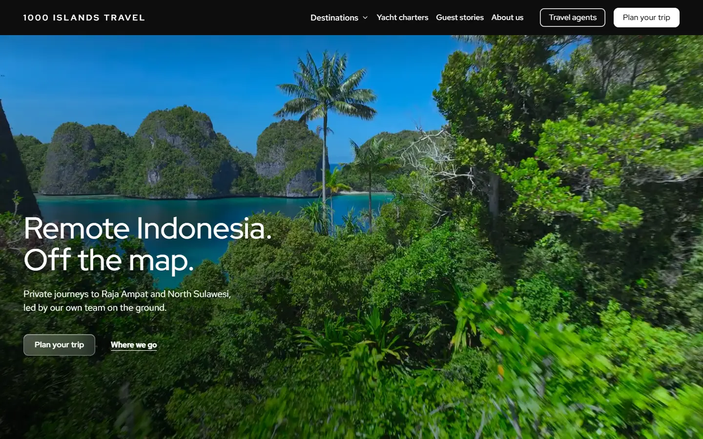
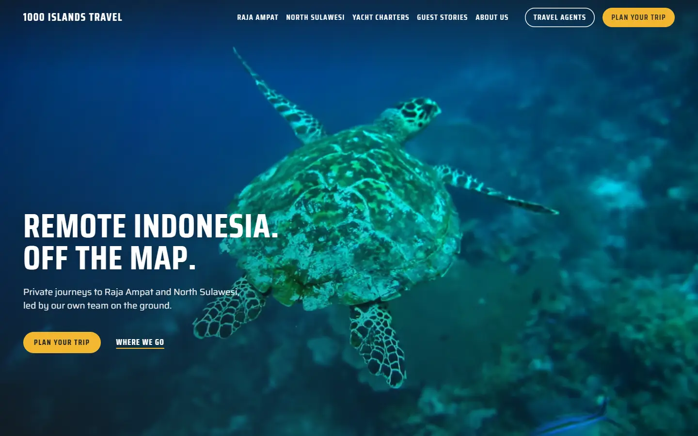
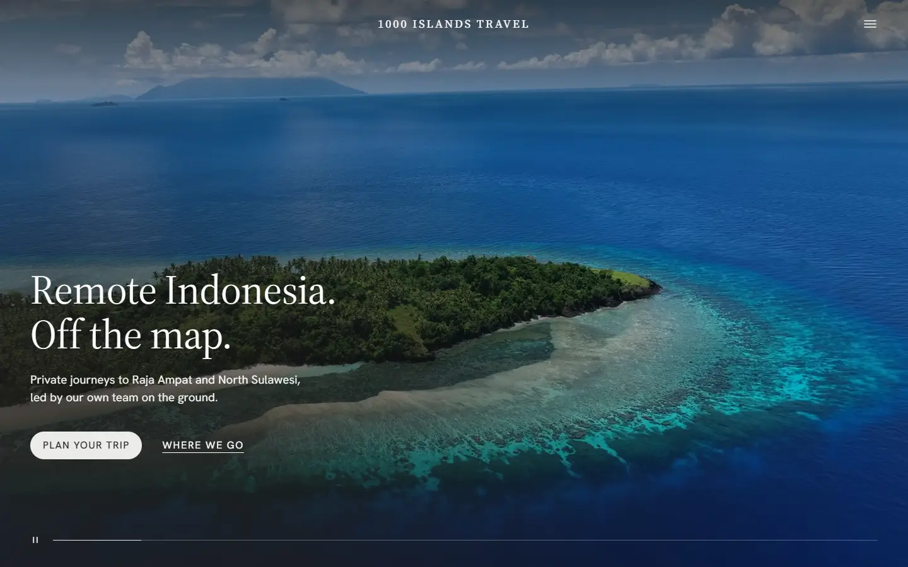
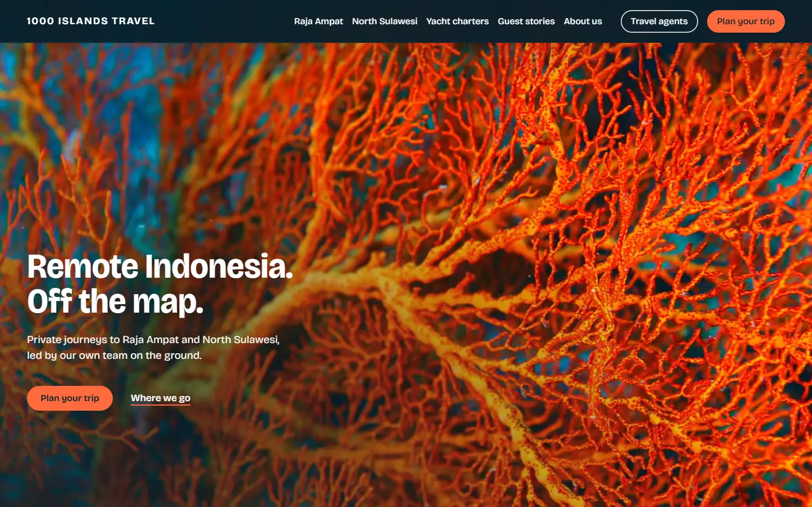
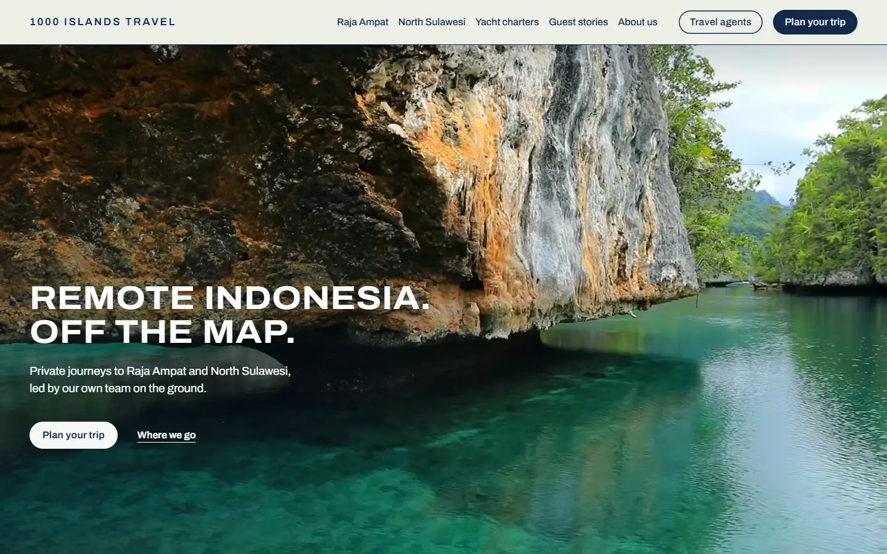

1 · Expedition
По мотивам explora.com, который ты прислал. Чёрное и белое, широкий геометрический шрифт, чёрная шапка над видео, кнопка из матового стекла.
Шрифты: Red Hat Display, Red Hat Text
Открыть
2 · Field kit
По мотивам bndcarhire.com. Сигнальный жёлтый на графите, тяжёлый узкий шрифт, всё скруглённое. Видео во весь экран под прозрачной шапкой. Самый «экспедиционный».
Шрифты: Saira Condensed, Saira
Открыть
3 · Quiet
По мотивам aman.com, нашего выбора. Светлый камень, тонкая антиква, видео во весь экран под прозрачной шапкой, много воздуха. Спокойный дорогой тон.
Шрифты: Source Serif 4, Hanken Grotesk
Открыть
4 · Reef
Наш вариант. Глубокий синий океана и коралловый цвет горгонарии из твоего видео, крупный выразительный шрифт, скруглённые фото, контурные иконки. Самый яркий.
Шрифт: Bricolage Grotesque
Открыть
5 · Chart
Наш вариант. Морская карта: тёмно-синие линии и рамки, пометки моноширинным шрифтом, широкий заголовочный шрифт. Обыгрывает «Off the map».
Шрифты: Archivo, Martian Mono
Открыть